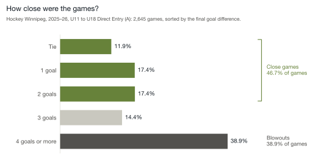

Youth hockey series · Paper 3 of 3
Designing Competition That Develops Players
The Structural Conditions for Stronger Seasons in Youth Hockey
Designing for Better Seasons
Competitive imbalance in youth hockey is familiar. Seasons often separate early. A few teams spend months winning almost every game, while others struggle to keep games close. Parents, coaches and players all feel it, even when it is hard to put into words.
During the 2025–26 season in Hockey Winnipeg, nearly half of all teams, 165 of 351, finished outside the 30 to 70 percent win-rate band described in the first paper. Those teams spent most of the season either as the clearly stronger side or chasing the game.
This pattern does not persist because people are careless or indifferent. Evaluators volunteer their time. Associations work hard to form teams. Administrators work within tight timelines and real constraints. And yet, across regions and age groups, similar outcomes appear year after year.
When outcomes repeat despite good effort, the cause is usually in how the system is set up.
The second paper traced the imbalance to two points, both before the first game: when evaluators’ scores are combined without being checked against each other, and when one fixed tier structure is laid over associations that differ. If that is where imbalance is built, trying harder will not fix it. The issue is not effort. It is design.
Youth hockey is already competitive in moments: the tied third period, the late penalty kill, the whole bench on its feet for the last shift. The question is whether a league can be designed to produce those games more often, for the sake of development and fun. Players improve most when games demand their attention, when the outcome is uncertain, and when effort changes the result.
That takes three conditions. Each one is described below as it would look in a well-designed league.
Condition 1: Evaluation Must Be Calibrated Across Observers
Associations use several evaluators to make evaluations fairer. Different perspectives can reduce one person’s bias and catch what one person would miss. But more evaluators only add precision when everyone is scoring the same skills, against shared definitions, and when the differences in how each person scores are understood.
Youth hockey evaluations will always involve judgment. The goal is to make sure that judgment works from a common reference point.
Human judgment has patterns. As the second paper showed, some evaluators score players lower and some score them higher. Some squeeze players together. Others spread them out. These tendencies repeat, player after player, session after session.
When session results are combined without accounting for these patterns, the differences between evaluators can shape final placements as much as the real differences between players. This matters most near the line between tiers, where a small shift moves a player, and a few players moving can change several rosters.
Calibration does not remove anyone’s perspective. It lines them up.
For example, picture two strong players of equal ability. One skates mostly in front of an evaluator who squeezes players together. The other skates mostly in front of one who spreads them out. Same skill, different scores, and possibly different tiers. Without calibration, no one sees it happen.
In the spring, the board looks back on the season. Someone asks why one tier ran so lopsided. The scores were entered carefully. The rankings looked sound. No one can point to a mistake, because no one made one. The cause was a pattern in the scoring that no one was set up to see.
A fair system makes sure evaluator input is brought together deliberately. When evaluators are aligned, placements feel grounded and consistent. When they are not, small differences can shape an entire season.
Condition 2: Tier Structure Must Reflect Each Age Group
Every age group is shaped differently, and so is each association’s share of it. Some have a deep group of strong players at the top. Others bunch tightly in the middle. Others have natural gaps. That variation is normal.
Problems start when fixed tier counts are laid over groups that keep changing.
Consider a region where tier counts are set by registration numbers. Each association evaluates its players locally. Then the region applies the same split to everyone, like the three associations in the second paper. If one association has an unusually deep group at the top, some players who belong in Tier A get pushed down to Tier B to fit the count. If another association has fewer players at that level, the line for Tier A stretches down to fill its spots.
No one has made a mistake. Each association acted reasonably. The mismatch comes from natural variation meeting a fixed structure.
When tier counts are set in advance, usually from registration numbers, rather than from how players actually group within an age group, the fit gets looser. The tier labels stay the same, but the real level behind "Tier A" can differ from one association to the next. Over a season, those small mismatches show up in the standings. A Tier B team wins by ten goals in October. Its coach knows the kids belong a level up. The parents on the other bench know it too. For the kids on both benches, the fun went out of that game in the first period.
A league that develops players responds to the real shape of each age group rather than relying on a fixed template. Tier design must reflect how players are grouped this year.
Condition 3: Leagues Must Be Able to Demonstrate Their Level of Competition and Development
Improvement cannot rely on impressions alone. If a league cannot show how competitive its games are, or whether close, meaningful games are spread across most teams, changing the structure becomes guesswork.
A league has to be able to see itself.
It starts with a few plain measures of what a healthy league looks like. For example:
- The share of teams that finish with a win rate between 30 and 70 percent
- The share of games decided by two goals or less, including ties
- The share of games decided by four goals or more
Figure 1 shows the last two for Hockey Winnipeg’s 2025–26 Direct Entry season.

Swipe to see the full chart →
A little under half of the games were close. About 4 in 10 were blowouts. For a team playing 20 games, that is about eight blowouts in a season.
Some variability will always remain, and it should. These measures show whether close games are common across the league or limited to a few teams.
When a large share of teams sit at the extremes, winning almost every game or losing almost every game, there is less room to develop, and both kinds of season stop being fun. When more teams see a mix of wins and losses, more players spend their season in games where effort changes the outcome.
Measurement moves the conversation from stories to evidence. Today, the end of a season runs on stories: the parent’s email, the coach’s frustration, a board member’s sense that it felt lopsided this year. Instead of asking whether the season felt balanced, a league can check whether it actually became more balanced. Instead of arguing over individual placements, associations can look at the results of the whole structure.
The goal is not statistical perfection. It is intentional design.
When leagues can demonstrate the level of competition they produce, improvement becomes deliberate rather than reactive.
And when a league can count its close games, it can make sure more players get them.
The Shape of a Different Season
Youth hockey has never lacked commitment. Volunteers give their time. Coaches give their energy. Families organize their lives around practices, games, and travel. The effort is real.
What has been missing is alignment between the structure and the players it serves.
When evaluators are aligned, when tier structure reflects the shape of each age group, and when leagues can show the competition they produce, seasons begin to change.
Standings separate more slowly. More games are still undecided in the final minutes. Fewer teams spend months at the extremes. More players feel the kind of pressure that sharpens their decisions instead of pushing them out of the game. More kids come off the ice tired, a little nervous, and already looking forward to the next game. That is what fun looks like in a well-matched league.
The goal is meaningful competition: games where effort affects the outcome and the games themselves drive development.
The people inside the system are already committed. What needs to change is how the system is designed.
When those conditions are in place, stronger development becomes the predictable result of how the league works.
And seasons begin to feel the way they were always meant to feel.
Want to hear what we publish next?
Sources and method
Win rates: Hockey Winnipeg published standings, 2025–26 season, all 351 teams in the U11 to U18 Direct Entry (A) and female A leagues. Win rate is points earned as a share of points available, so a tie counts as half a win. The first paper has the full method.
Figure 1: Hockey Winnipeg game results, 2025–26 season, every U11 to U18 Direct Entry (A) division, 2,645 games. Each team’s number of games matches the published standings. Forty games against an opponent not named in the results are left out. The girls’ divisions are not included, because only their final standings were available.
Evaluator patterns and the three-association example: from the second paper.
© 2026 Max Analytics · maxanalytics.ca · Win rates: Hockey Winnipeg published standings, 2025–26. Figure 1: Hockey Winnipeg Direct Entry game results, 2025–26.